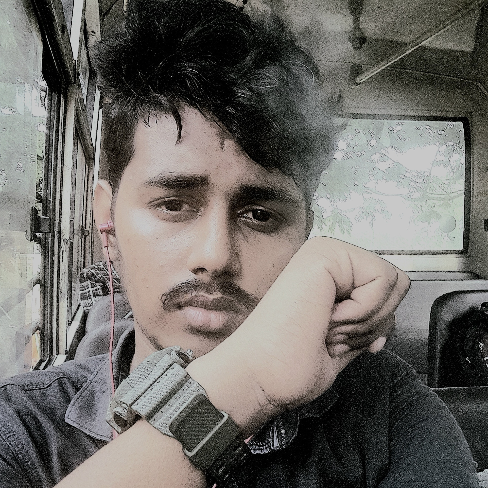

About Me
As a dedicated Computer Engineering student with a passion for coding and data structures, I strive to harness the power of technology to solve complex problems and create innovative solutions. With a keen interest in browsing and cricket, I bring a dynamic perspective to my work, continuously seeking new challenges to expand my skill set. My journey as a learner has led me to master SQL alongside various coding languages, enabling me to navigate the intricate landscapes of software development with confidence and precision. With a vision to become a respected software developer, I am committed to continuously learning and embracing new technologies, ensuring that I stay at the forefront of innovation. Driven by a desire to make a positive impact, I am dedicated to leveraging my expertise to mentor and empower others, helping them fulfill their aspirations in the realm of technology. Through my consultancy, FIBNOCICS CONSULTANCY, I aim to provide comprehensive support to individuals seeking to excel in their academic pursuits, offering services such as TOEFL and GRE exam preparation, online booking solutions, and personalized consultancy services. With a strong emphasis on integrity and excellence, I approach each endeavor with a sense of responsibility and a commitment to upholding the highest standards. By living with honor and integrity, I strive to inspire and empower those around me, fostering a culture of growth and mutual respect. Through my portfolio, I invite you to explore the culmination of my efforts, showcasing not only my technical proficiency but also my dedication to continuous improvement and lifelong learning. Join me on this journey as we navigate the ever-evolving landscape of technology, leaving a lasting impact on the world around us.
